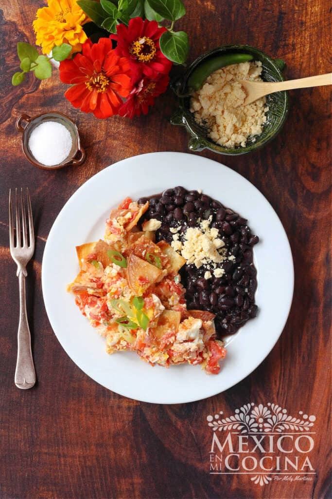

Migas Mexicanas

Receta de Migas a la mexicana
Ingredientes
- Aceite vegetal
- Tortillas de maíz
- Cebolla blanca
- Chile serrano
- Tomate picado
- Huevos
- Sal
Pasos
- Corta las tortillas de maíz en cuadrados o triángulos pequeños, de aproximadamente 4 centímetros de ancho. Puedes usar un cuchillo o un par de tijeras de cocina para cortarlos.
- Calienta el aceite en una sartén grande. Una vez caliente, coloca los trozos de tortilla en el aceite y sofríelos hasta que estén dorados. Asegúrate de usar una sartén que sea lo suficientemente grande para no abarrotar la sartén. Remueve y voltea las tortillas según sea necesario hasta que adquieran un color dorado. Este paso tardará unos 6 minutos
- Retira los trozos crujientes de tortilla y colócalos en un plato cubierto con una servilleta de papel (para absorber el exceso de aceite de las tortillas). Retira el aceite que quedó en la sartén, dejando solo una cucharada de ese aceite para cocinar el resto de los ingredientes.
- Regresa la sartén a la estufa y colócala a fuego medio. Agrega la cebolla blanca picada y sofríela por unos segundos, luego añada el chile serrano picado. Sigue cocinando durante unos 2 minutos.
- Agrega el tomate picado y cocine por unos 3 minutos más, luego añada los huevos. Deja que los huevos comiencen a cocinarse sin revolverlos todavía.
- Una vez que las claras de huevo comiencen a verse cocidas en los bordes, revuelva suavemente los huevos. Cuando veas que las yemas comienzan a cocinarse, agrega los pedazos de tortilla, sazone con sal y mezcle suavemente con los huevos. Si los huevos estén cocidos a tu gusto, retira la sartén del fuego. Las tortillas aún deben estar crujientes cuando sirvas las migas. No esperes hasta que los huevos estén cocidos para agregar los totopos. Recuerda que los huevos seguirán cocinándose incluso después de retirar la sartén del fuego.
Home